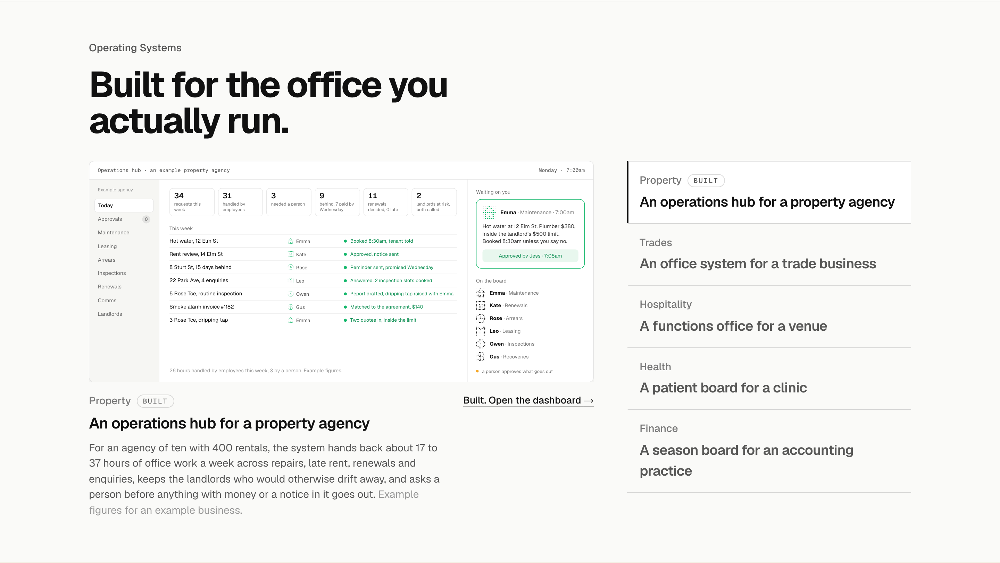
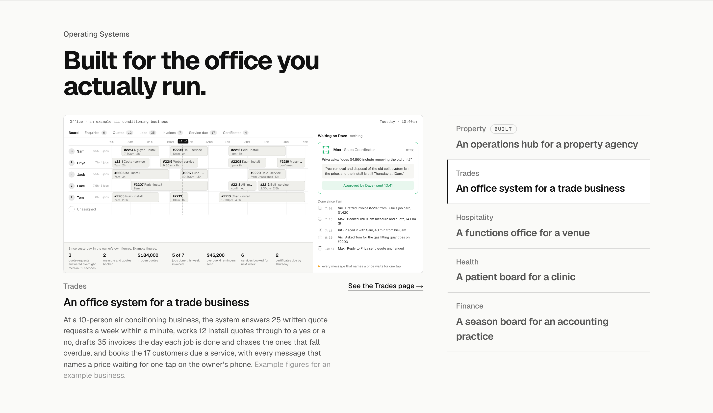
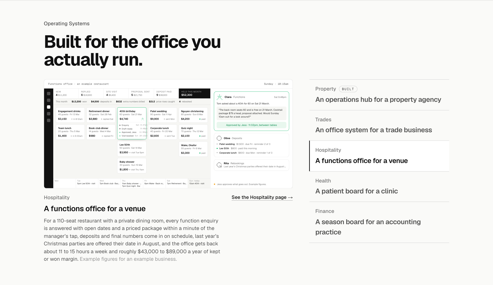
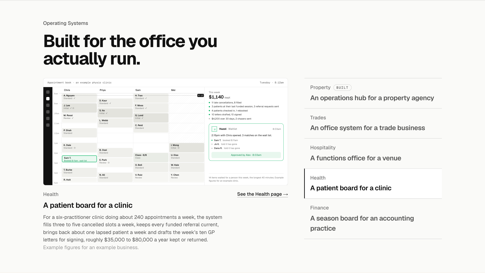
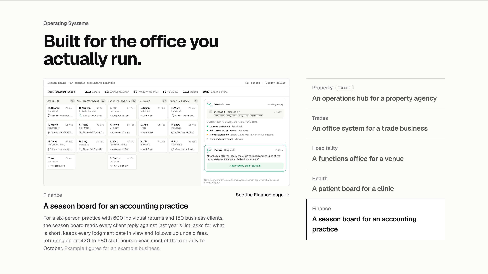
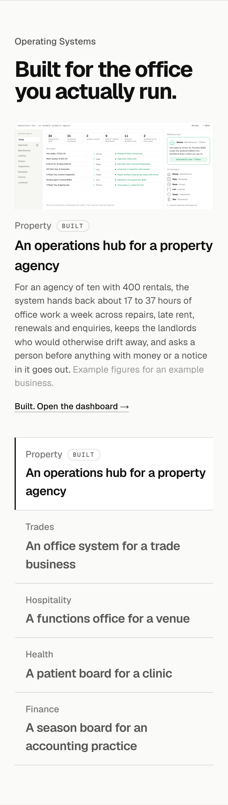

Operating Systems built
Homepage section 4 after the definition and value pass: each screen is the owner’s view of that industry’s operating system, work already done with one decision left, and under it the model’s line for an example business, said to be example figures. No software names. The Work is folded in: Property carries its open link and a Built tag. Calm until clicked, then that screen plays once. Every name and figure is made up.
PropertyThe owner’s Monday page: six tiles in the stat-strip idiom, the week as a list of jobs with the employee on each row, one approval card, one grey line about hours. Built, with the open link.

TradesThe dispatch board the office lives in, with the owner’s 7am figures under it, the one reply waiting on him and the morning’s feed.

HospitalityThe functions board with a dollar on every stage, the till strip above it, the 40th moving across with its timeline, the one approval, deposits and rebookings, the week along the bottom.

HealthThe appointment book with the owner’s weekly page beside it: one line read in five seconds, its parts in plain rows, the wait-list offers as the one approval, the slot filled.

FinanceThe season board: counters and the on-time figure, the fat waiting-on-client column where every card says what is missing and since when, one reply read against last year’s list, one Approve and send. Hours, never dollars.

PhoneThe section at 375: the screen scaled, the line, the link, the list.
